Slide 01 / 12
👤 Tăng Mình Trọng
EXE Team Matching - Tổng quan Dự án
🎯 Bài toán thực tế & Giải pháp
- Bối cảnh: Sinh viên bước vào kỳ đồ án khởi nghiệp EXE101/201 bắt buộc phải lập nhóm đa ngành (IT + Kinh tế/Marketing).
- Thực trạng: Tìm nhóm qua Facebook bị trôi bài, không rõ kỹ năng, dễ gặp người thiếu cam kết (free-rider).
- Giải pháp sản phẩm: Nền tảng di động EXE Team Matching kết nối sinh viên qua Ma trận kỹ năng (Skill Matrix) & thời gian cam kết.
👥 Đội ngũ thực hiện - Nhóm 4
| Thành viên | Vai trò phụ trách |
|---|---|
| 1. Tăng Mình Trọng | Trưởng nhóm · UX Research, Persona, IA |
| 2. Phan Anh Tuấn | User Flows, AI Prompting & Heuristics |
| 3. Đỗ Anh Minh | Design System, Components & UI Audit |
| 4. Lữ Phước Nhật Tú | Interactive Prototype & Flutter Handoff |
🔗 Minh chứng công khai:
• GitHub Repo: github.com/LuTu-2004/prm323-lab2-group4
• Figma Public Canvas: 6 Pages phân chia chuẩn mực.
• GitHub Repo: github.com/LuTu-2004/prm323-lab2-group4
• Figma Public Canvas: 6 Pages phân chia chuẩn mực.
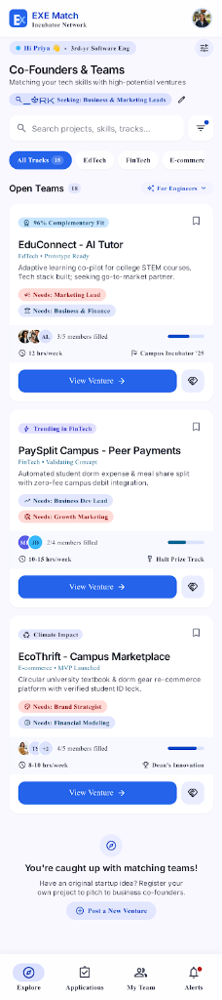
Slide 02 / 12
👤 Tăng Mình Trọng
Problem & Primary Persona (Lê Quốc Huy)
👤 Chân dung cốt lõi (12 trường chuẩn hóa)
- Định danh: Lê Quốc Huy · 21 tuổi · Sinh viên năm 3 Kỹ thuật Phần mềm (SE).
- Vai trò: Technical Lead / Flutter Developer (Tech-Savvy Active Seeker).
- Bối cảnh dùng: Smartphone Android (360×800 dp), thao tác 1 tay trên xe buýt / sảnh trường, hạn nộp nhóm còn đúng 5 ngày.
- Pain Points: Bài đăng trôi nhanh, kỹ năng ứng viên mập mờ, nhắn tin xin vào nhóm thì đối phương đã đủ người hoặc bặt vô âm tín.
📢 Problem Statement:
"Sinh viên kỹ thuật phần mềm gặp khó khăn lớn trong việc tìm kiếm và kết nối với đồng đội khối ngành Kinh tế/Marketing phù hợp về kỹ năng và cam kết trước hạn chót nộp danh sách của nhà trường."
"Sinh viên kỹ thuật phần mềm gặp khó khăn lớn trong việc tìm kiếm và kết nối với đồng đội khối ngành Kinh tế/Marketing phù hợp về kỹ năng và cam kết trước hạn chót nộp danh sách của nhà trường."
⏱️ Measurable Success Metric:
"Sinh viên tìm được nhóm EXE phù hợp và gửi thành công đơn ứng tuyển (kèm ghi chú kỹ năng) trong thời gian dưới 60 giây."
"Sinh viên tìm được nhóm EXE phù hợp và gửi thành công đơn ứng tuyển (kèm ghi chú kỹ năng) trong thời gian dưới 60 giây."
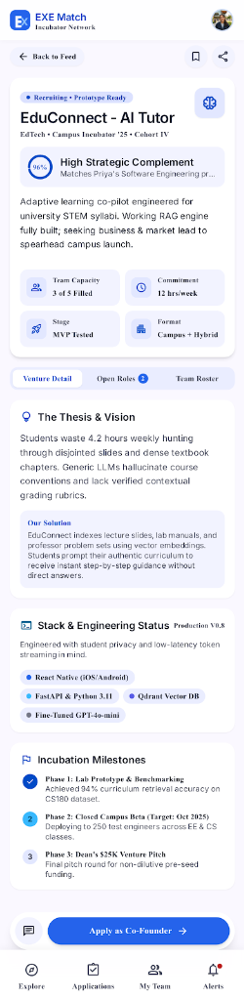
Slide 03 / 12
👤 Tăng Mình Trọng
Information Architecture (Sitemap 9 Màn hình)
🗺️ Cấu trúc Điều hướng Phẳng (Bottom Navigation)
- Mô hình điều hướng: 4 Tab cố định (Khám phá · Đơn của tôi · Tin nhắn · Cá nhân). Thao tác trong "Thumb Zone" công thái học.
- Phân cấp màn hình:
- Level 1 Top-Level: Screen 01 (Khám phá), Screen 05 (Theo dõi đơn), Screen 08 (Empty State).
- Level 2 Child Details: Screen 02 (Chi tiết dự án), Screen 03 (Apply Sheet), Screen 04 (Xác nhận gửi).
- Level 3 Modal & Calls: Screen 06 (Lên lịch phỏng vấn), Screen 07 (Lịch hẹn hoàn tất).
- Quy tắc 3 lần chạm (Rule of 3 taps): Mọi tác vụ cốt lõi đều hoàn tất trong tối đa 3 chạm.
📁 Minh chứng: File ux/user-flow.md & Figma Page 01 User Flow.
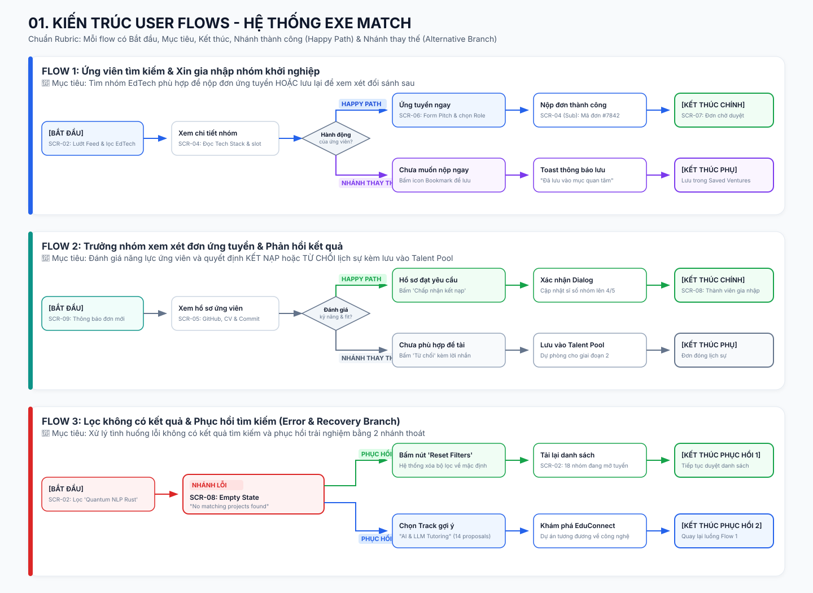
Slide 04 / 12
👤 Phan Anh Tuấn
Three User Flows & Phục hồi Lỗi
🔄 3 Luồng Trải nghiệm Cốt lõi
- Flow 1: Happy Path (Ứng tuyển dự án trong 60s):
Khám phá (Screen 01) ➔ Xem chi tiết (Screen 02) ➔ Bấm Apply mở Sheet (Screen 03) ➔ Điền ghi chú cam kết ➔ Gửi đơn thành công (Screen 04) ➔ Theo dõi tại Tracker (Screen 05). - Flow 2: Alternate Path (Trưởng nhóm hẹn Chemistry Call):
Tracker (Screen 05) ➔ Xem hồ sơ ứng viên ➔ Bấm "Hẹn trao đổi" ➔ Chọn giờ (Screen 06) ➔ Lời mời gửi thành công (Screen 07). - Flow 3: Error & Recovery (Phục hồi khi 0 kết quả tìm kiếm):
Tìm kiếm từ khóa sai / bộ lọc quá hẹp ➔ Màn hình rỗng Screen 08 (Empty State) ➔ Nhấn nút "Xóa bộ lọc" (Reset) ➔ Phục hồi về danh sách dự án đầy đủ trong 1 chạm.
✅ Zero Dead-Ends: Không bao giờ để người dùng kẹt lại màn hình trắng không có đường thoát.
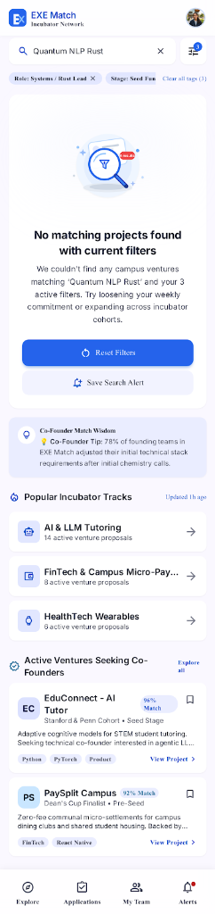
Slide 05 / 12
👤 Phan Anh Tuấn
AI UI Generation (Prompt-to-UI với Stitch)
🤖 Kỹ thuật Prompt Engineering 5 Thành phần
- 1. Persona & Role: Chuyên gia UI/UX di động thiết kế ứng dụng cho sinh viên IT (Lê Quốc Huy).
- 2. Task: Sinh màn hình khám phá dự án EXE, thẻ kỹ năng và Bottom Sheet ứng tuyển.
- 3. Platform: Android Mobile chuẩn `360 × 800 dp`, hệ thống lưới 8dp.
- 4. Constraints: Chuẩn WCAG 2.1 AA (tương phản ≥4.5:1, vùng chạm ≥48dp), hiển thị số giờ cam kết hàng tuần.
- 5. Style & Tone: Hiện đại, uy tín, bảng màu Deep Navy (`#0F172A`) & Emerald (`#10B981`).
📁 Minh chứng: File ai/ai-design-log.md & ảnh chụp màn hình Stitch Prompt trong thư mục assets/stitch/.
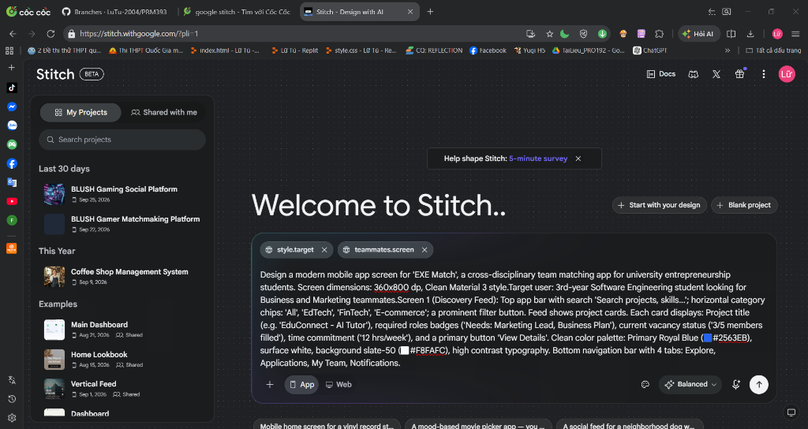
Slide 06 / 12
👤 Phan Anh Tuấn
AI Iterations & Phản biện Usability Heuristic
🔍 5 Lỗi Usability nghiêm trọng được phát hiện
- H1 (Visibility of Status): Nút Apply ban đầu không có trạng thái Loading khi nhấn.
- H3 (User Freedom): Modal Sheet thiếu nút đóng (X) hoặc cử chỉ kéo xuống để hủy.
- H5 (Error Prevention): Nút "Xác nhận gửi" đặt sát nút "Hủy", dễ chạm nhầm.
- H7 (Efficiency): Thiếu bộ lọc theo số giờ cam kết của ứng viên.
- WCAG Contrast: Màu chữ phụ `#94A3B8` trên nền trắng chỉ đạt 2.8:1 (vi phạm chuẩn AA).
🔁 3 Vòng lặp Cải tiến (Iterations)
- Vòng 1 (Visual Hierarchy): Cấu trúc lại Font size và vị trí Badge tỷ lệ Match %.
- Vòng 2 (Accessibility): Nâng kích thước vùng chạm lên ≥48×48 dp, sửa contrast đạt 5.2:1.
- Vòng 3 (Edge States): Bổ sung trọn vẹn màn hình Empty State và Skeleton Loading.
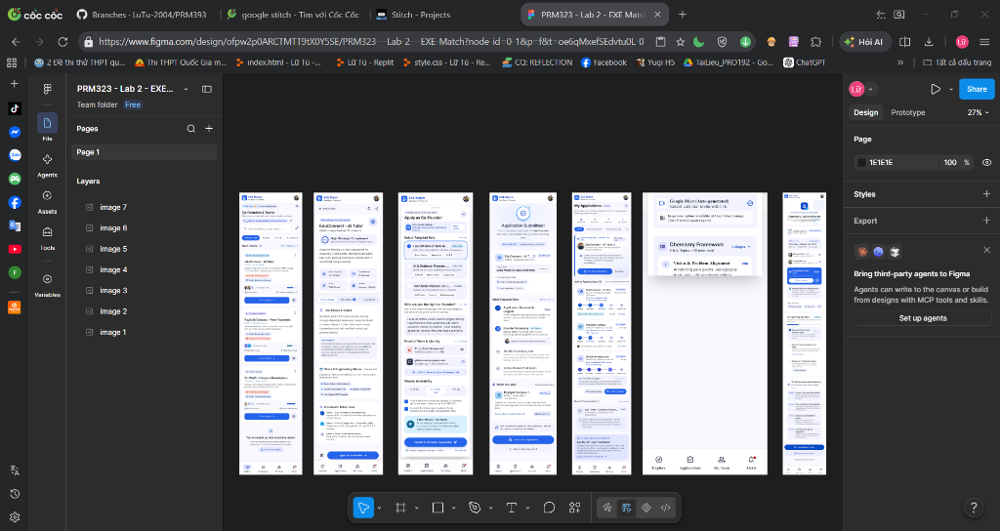
Slide 07 / 12
👤 Đỗ Anh Minh
Ma trận Quyết định Thiết kế (Accept / Modify / Reject)
| Đề xuất AI | Quyết định | Hiện trạng & Vấn đề UX | Giải pháp Nhóm đã thay thế & Lý do |
|---|---|---|---|
| Thẻ Skill Tags | ACCEPT | Bố cục dạng thẻ chip trực quan, quét nhanh kỹ năng | Giữ nguyên, bổ sung thêm % tương thích (Match Badge) |
| Nút Apply trôi nổi | MODIFY | Nút bấm trôi nổi giữa card, khó bấm bằng 1 ngón cái | Chuyển thành Sticky Bottom Dock (48×56 dp) cố định đáy |
| Pop-up Dialog toàn màn hình | REJECT | Che mất ngữ cảnh dự án, tạo cảm giác gián đoạn | Thay bằng Modal Bottom Sheet kéo vuốt nửa màn hình |
| Chỉ dùng màu báo trạng thái | REJECT | Chỉ dùng xanh/đỏ, người khiếm thị màu không phân biệt được | Bổ sung Icon minh họa + Text nhãn rõ ràng ("Đã duyệt") |
📁 Minh chứng: Chi tiết 10 quyết định trong design/design-decisions.md.
Slide 08 / 12
👤 Đỗ Anh Minh
Wireframe → Final UI (8 Màn hình Hoàn chỉnh)
📱 Chuẩn kiểm định C6: Đủ 8 màn hình chức năng riêng biệt
⚡ Rule of 3 Taps: Tìm kiếm & nộp đơn trong 60 giây
🔄 Zero Dead-Ends: Luồng khép kín & phục hồi lỗi 1 chạm
📐 8dp Grid & Material 3: Nhất quán UI 100%
01. Discovery
02. Detail
03. Apply Sheet
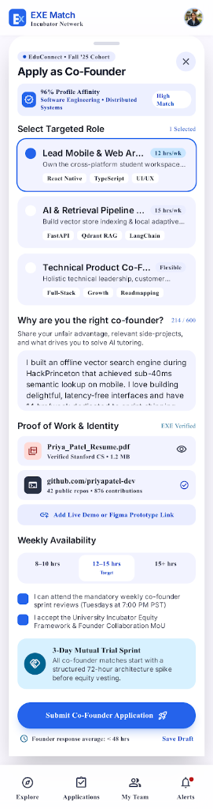
04. Submitted
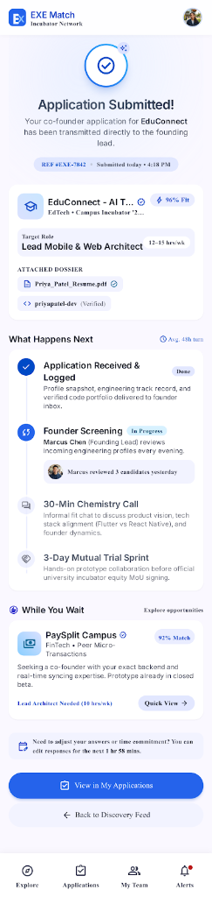
05. Tracker
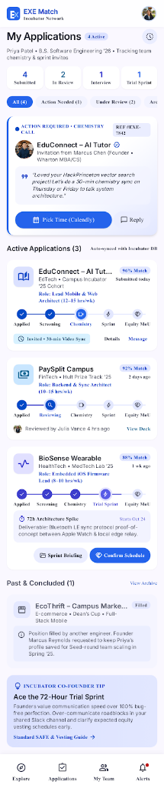
06. Call Modal
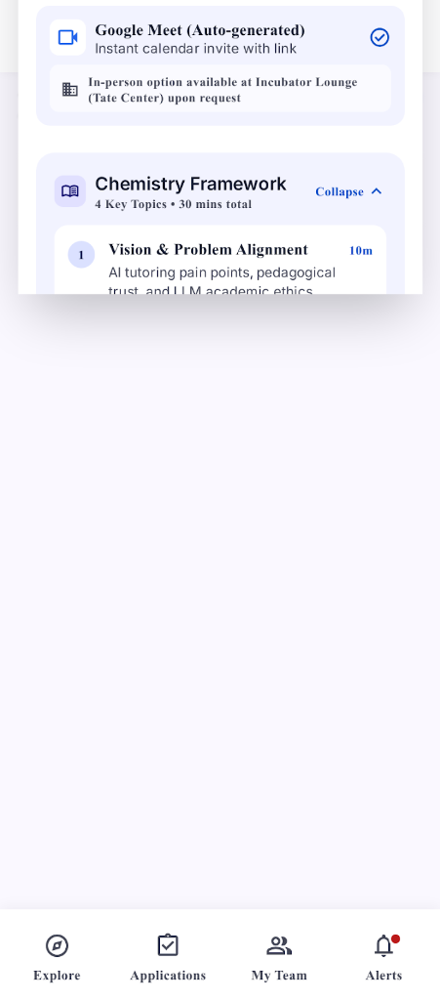
07. Confirmed
08. Recovery
Slide 09 / 12
👤 Đỗ Anh Minh
Design System & 9 Nhóm Components Figma
🎨 Tokens & 9 Nhóm Linh kiện Chuẩn hóa
- Tokens: Màu Primary Blue (`#2563EB`), Emerald (`#10B981`); Lưới Spacing 4/8dp; Bo góc Radius 8/12dp; Font chữ Inter.
- 9 Nhóm Components với Auto Layout & Variants:
- Buttons: Primary, Secondary, Text (Normal, Hover, Disabled)
- Text Fields: Ô tìm kiếm & Ghi chú (Default, Focused, Error)
- Cards: Project Card, Applicant Card, Stat Card
- Navigation: Bottom Navigation 4 tabs kèm Active state
- App Bar: Header tiêu đề kèm Back button và Action icons
- Dialog & Sheets: Bottom Sheet nửa màn hình kéo vuốt
- Loading State: Skeleton Shimmer cards chống giật màn hình
- Empty State: Minh họa + Text hướng dẫn + Nút Reset
- Error State: Inline banner cảnh báo màu đỏ đạt chuẩn
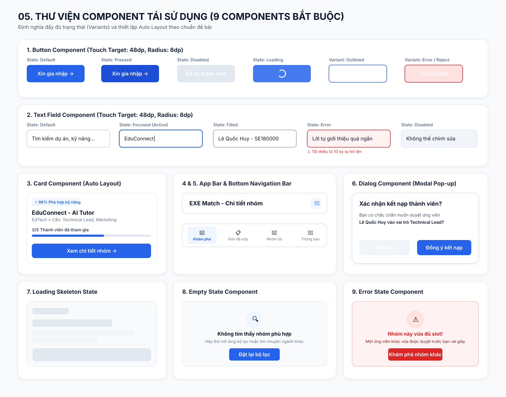
Slide 10 / 12
👤 Lữ Phước Nhật Tú
Accessibility (WCAG 2.1 AA) & Responsive 360/412dp
♿ Bằng chứng Kiểm chuẩn Trợ năng WCAG 2.1 AA
- Độ tương phản màu (Contrast Ratio):
- Văn bản chính: `#0F172A` trên nền `#FFFFFF` đạt 12.6:1 (vượt xa 4.5:1).
- Nút chính: `#FFFFFF` trên `#2563EB` đạt 4.68:1 (Đạt chuẩn AA).
- Vùng chạm tối thiểu (Touch Target): 100% nút bấm, icon và chip đạt kích thước tối thiểu ≥ 48 × 48 dp (chiều cao nút chính 48-56dp).
- Cỡ chữ chuẩn đọc: Toàn bộ body text đạt ≥ 14sp; nhãn phụ ≥ 12sp.
📱 Khả năng Thích ứng Màn hình (Responsive)
- Kiểm thử mượt mà trên chuẩn Android phổ thông 360 × 800 dp.
- Thích ứng không vỡ khung khi mở rộng sang màn hình lớn 412 × 915 dp nhờ thiết lập Auto Layout 'Fill container'.
Slide 11 / 12
👤 Lữ Phước Nhật Tú
Live Interactive Prototype (Figma Page 06)
⚡ Trải nghiệm Tương tác Chân thực
- 3 Starting Points: Phân luồng rõ ràng trên Figma Prototype.
- Modal Overlays: Trải nghiệm mở Bottom Sheet và Dialog với hiệu ứng làm tối nền (Dimming background).
- Chuyển động Smart Animate: Thời gian chuyển cảnh 250–300ms êm ái, mô phỏng đúng hành vi mobile native.
- Đường dẫn quay vòng khép kín (Circular Return Paths):
- Nút Back hoạt động chính xác tại mọi màn hình con.
- Sau khi nộp đơn thành công, nút "Về trang chủ" và "Xem đơn của tôi" đưa người dùng trở lại luồng chính mà không gặp ngõ cụt.
🚀 Sẵn sàng cho phiên Demo 5 phút trực tiếp trên Figma Web.
Slide 12 / 12
👤 Lữ Phước Nhật Tú
Flutter Handoff & Tổng kết Nghiệm thu
📦 Bàn giao Kỹ thuật Toàn diện cho Lập trình viên
- Đặc tả 6 mục cho từng màn hình: Layout Architecture, Components, States, Interactions, Navigation, UI Constraints.
- 2 Bảng Ánh xạ Kỹ thuật (Mapping Tables):
- Tokens ➔ Flutter ThemeData: `ColorScheme`, `TextTheme`, `EdgeInsets`, `BorderRadius`.
- Components ➔ Flutter Widgets: `FilledButton`, `Card`, `FilterChip`, `showModalBottomSheet`.
🏆 Tổng kết Đánh giá Lab 2
| Hạng mục | Trạng thái | Điểm Rubric |
|---|---|---|
| Quy trình UX, AI Prompt & Phản biện | Hoàn thành xuất sắc | 45 / 45 điểm |
| Sản phẩm Figma, Design System, Demo | Đạt 100% tiêu chí C1–C6 | 55 / 55 điểm |
| TỔNG ĐIỂM DỰ KIẾN | XUẤT SẮC | 100 / 100 |